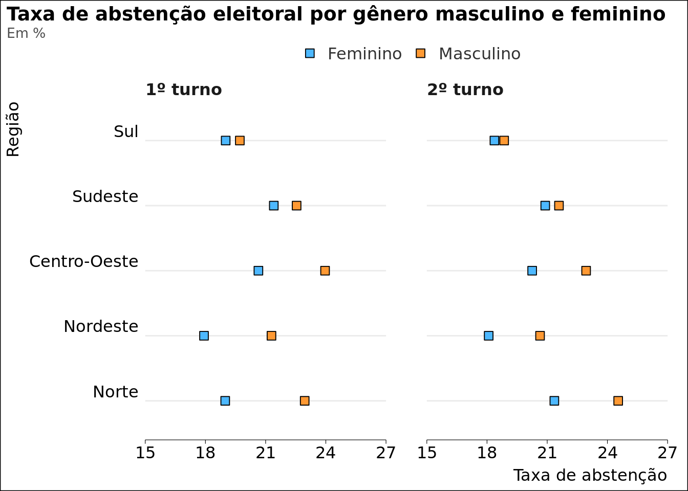
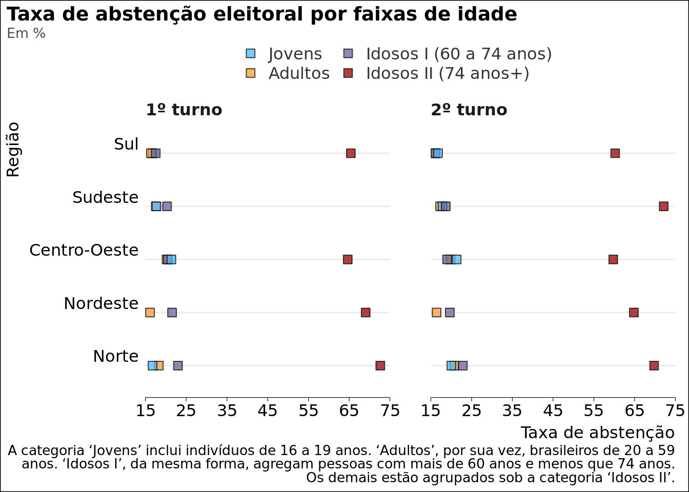

Quem não votou nas eleições brasileiras de 2022? Recentemente, pesquisadores eleitorais, políticos e jornalistas repercutiram divergências entre pesquisas eleitorais e resultados das urnas. Especialistas, de um lado, afirmaram que a discrepância entre intenção de voto e votos válidos reside na dificuldade de estimação das taxas de abstenção em pesquisas eleitorais. Sem adequadas taxas de abstenção, argumentam, pesquisas de intenção de voto não devem lidas como preditores de votos válidos1. De outro lado, institutos de pesquisas reuniram esforços para produzir ferramentas capazes de estimar quem seriam os eleitores prováveis, que compareceriam no segundo turno das eleições presidenciais de 2022.
Nesta postagem, eu extraio a taxa de abstenção eleitoral das eleições de 2022 em cada região geográfica. Os dados estão desagregados pelo perfil sociodemográfico dos eleitores brasileiros aptos a votar.
Code
# Leitura e manipulação dos dados## Leitura dos dados eleitorado_mun2022 ="https://arturhgq-my.sharepoint.com/:x:/p/contact/EWAJSj5LIPxFhnVZ1Dnm6XsBjM4UKkzzvZcdmknX_rz5Xw?e=fkf8Ke"data = read365::OneDrive_shared_file( eleitorado_mun2022,.function = vroom::vroom,show_col_types =FALSE) # data.tabledata.table::setDT(data)## Operações com os dados### Remodela a tabela do eleitoradodt_melt = data.table::melt( data, measure.vars =c("DS_GRAU_ESCOLARIDADE", "DS_GENERO", "DS_FAIXA_ETARIA"),variable.name ="PERFIL_VARS",value.name ="PERFIL_VALUE") ### Recodifica as categorias da variável 'PERFIL_VALUE'recode_perfil =function(x) { data.table::fcase( x =="ENSINO FUNDAMENTAL COMPLETO", "Ensino Fundamental", x =="ENSINO FUNDAMENTAL INCOMPLETO", "Ensino Fundamental", x =="ENSINO MÉDIO COMPLETO", "Ensino Médio", x =="ENSINO MÉDIO INCOMPLETO", "Ensino Médio", x =="SUPERIOR COMPLETO", "Ensino Superior", x =="SUPERIOR INCOMPLETO", "Ensino Superior", x =="ANALFABETO", "Analfabeto", x =="LÊ E ESCREVE", "Lê e Escreve", x =="16 anos", "Jovens", x =="17 anos", "Jovens", x =="18 anos", "Jovens", x =="19 anos", "Jovens", x =="20 anos", "Adultos", x =="21 a 24 anos", "Adultos", x =="25 a 29 anos", "Adultos", x =="30 a 34 anos", "Adultos", x =="35 a 39 anos", "Adultos", x =="40 a 44 anos", "Adultos", x =="45 a 49 anos", "Adultos", x =="50 a 54 anos", "Adultos", x =="55 a 59 anos", "Adultos", x =="60 a 64 anos", "Idosos I (60 a 74 anos)", x =="65 a 69 anos", "Idosos I (60 a 74 anos)", x =="70 a 74 anos", "Idosos I (60 a 74 anos)", x =="75 a 79 anos", "Idosos II (74 anos+)", x =="80 a 84 anos", "Idosos II (74 anos+)", x =="85 a 89 anos", "Idosos II (74 anos+)", x =="90 a 94 anos", "Idosos II (74 anos+)", x =="95 a 99 anos", "Idosos II (74 anos+)", x =="100 anos ou mais", "Idosos II (74 anos+)", x =="Inválido", "Inválido", x =="MASCULINO", "Masculino", x =="FEMININO", "Feminino", x =="NÃO INFORMADO", "Não Informado" )}dt_melt[, PERFIL_VALUE :=lapply(.SD, recode_perfil), .SDcols ="PERFIL_VALUE"]### Divide dt_melt em três: gênero, idade e escolaridadedt_split = data.table:::split.data.table(dt_melt, by ="PERFIL_VARS")### Cria vetores com os estados de cada Regiãonordeste =c("MA", "PI", "CE", "RN", "PB", "PE", "AL", "SE", "BA")norte =c("AM", "PA", "TO", "AC", "RO", "RR", "AP")centro_oeste =c("MT", "GO", "MS")sudeste =c("MG", "ES", "RJ", "SP")sul =c("PR", "SC", "RS")regiao_levels =c("Norte", "Nordeste", "Centro-Oeste", "Sudeste", "Sul")### Resume os dados a nível de região#### Função para resumir os dadosmake =function(data, by, vars) { regiao =function(x) { data.table::fcase( x =="DF", "Distrito Federal", x =="ZZ", "Exterior", x %in% nordeste, "Nordeste", x %in% norte, "Norte", x %in% centro_oeste, "Centro-Oeste", x %in% sudeste, "Sudeste", x %in% sul, "Sul" ) } data[ , REGIAO :=lapply(.SD, regiao), .SDcols ="SG_UF"][ , lapply(.SD, sum), by =eval(by), .SDcols = vars][ , tx_abstencao := QT_ABSTENCAO/QT_APTOS *100, by =eval(by) ][!REGIAO %in%c("Exterior", "Distrito Federal") ][ , REGIAO :=factor(REGIAO, levels = regiao_levels) ][ , NR_TURNO :=paste0(NR_TURNO, "º turno") ]}#### Lista de parâmetros que serão aplicados às tabelas##### Variáveis de agrupamentoby =c("REGIAO", "NR_TURNO", "ANO_ELEICAO", "PERFIL_VARS", "PERFIL_VALUE")##### Variáveis que serão agregadasvars =c("QT_APTOS", "QT_COMPARECIMENTO", "QT_ABSTENCAO")#### Faz as operaçõesparams =list(by = by, vars = vars)dt_split2 =mapply( make, dt_split,MoreArgs = params,SIMPLIFY =FALSE)
Taxa de abstenção por Gênero, Escolaridade e Idade
sysfonts::font_add_google("Cutive Mono")family ="Cutive Mono"#remotes::install_github("arturhgq/ggviz")dt_split2$DS_GENERO |> dplyr::filter( PERFIL_VALUE !="Não Informado" ) |> ggplot2::ggplot() + ggplot2::facet_wrap(~ NR_TURNO) + ggplot2::aes(y = REGIAO, x = tx_abstencao, fill = PERFIL_VALUE, label = tx_abstencao ) + ggplot2::scale_fill_manual(values =c("#4db8ff", "#ff9933") ) + ggplot2::scale_x_continuous(breaks =seq(15, 27, by =3), limits =c(15,27),expand =c(0,0) ) + ggplot2::geom_point(shape =22,size =3 ) + ggplot2::labs(title ="Taxa de abstenção eleitoral por gênero masculino e feminino",subtitle ="Em %",x ="Taxa de abstenção",y="Região") + ggviz::theme_academic(size_title =14,size_axis_text =12,size_legend =12,family = family,margin_plot_r =15,panel.spacing.x = ggplot2::unit(30, "pt") )

Code
dt_split2$DS_GRAU_ESCOLARIDADE |> dplyr::filter( PERFIL_VALUE !="Não Informado" ) |> dplyr::mutate(PERFIL_VALUE = forcats::fct_relevel( PERFIL_VALUE,"Analfabeto","Lê e Escreve","Ensino Fundamental","Ensino Médio","Ensino Superior" ) ) |> ggplot2::ggplot() + ggplot2::facet_wrap(~ NR_TURNO) + ggplot2::aes(y = REGIAO, x = tx_abstencao, fill = PERFIL_VALUE, label = tx_abstencao ) + ggplot2::scale_fill_manual(values =c("#990000", "#cc3300", "#ff9933", "#0099cc", "#0066cc") ) + ggplot2::scale_x_continuous(breaks =seq(5, 65, by =10), limits =c(5,65),expand =c(0,0) ) + ggplot2::geom_point(shape =22,size =3 ) + ggplot2::labs(title ="Taxa de abstenção eleitoral por escolaridade",subtitle ="Em %",x ="Taxa de abstenção",y="Região",caption ="As categorias 'Ensino Fundamental', 'Ensino Médio' e 'Ensino Superior' incluem indivíduos que completaram seus estudos ou interromperam-os antes de formar.") + ggviz::theme_academic(size_title =14,size_axis_text =12,size_legend =12,family = family,margin_plot_r =10,panel.spacing.x = ggplot2::unit(30, "pt") ) + ggplot2::guides(fill = ggplot2::guide_legend(nrow =2) )
Code
dt_split2$DS_FAIXA_ETARIA |> dplyr::filter(!PERFIL_VALUE %in%c("Não Informado", "Inválido") ) |> dplyr::mutate(PERFIL_VALUE = forcats::fct_relevel( PERFIL_VALUE,"Jovens","Adultos","Idosos I (60 a 74 anos)","Idosos II (74 anos+)" ) ) |> ggplot2::ggplot() + ggplot2::facet_wrap(~ NR_TURNO) + ggplot2::aes(y = REGIAO, x = tx_abstencao, fill = PERFIL_VALUE, label = tx_abstencao ) + ggplot2::scale_fill_manual(values =c("#4db8ff", "#ff9933", "#666699", "#990000") ) + ggplot2::scale_x_continuous(breaks =seq(15, 75, by =10), limits =c(15,75),expand =c(0,0) ) + ggplot2::geom_point(shape =22,size =3,alpha = .75 ) + ggplot2::labs(title ="Taxa de abstenção eleitoral por faixas de idade",subtitle ="Em %",x ="Taxa de abstenção",y="Região",caption ="A categoria 'Jovens' inclui indivíduos de 16 a 19 anos. 'Adultos', por sua vez, brasileiros de 20 a 59 anos. 'Idosos I', da mesma forma, agregam pessoas com mais de 60 anos e menos que 74 anos. Os demais estão agrupados sob a categoria 'Idosos II'.") + ggviz::theme_academic(size_title =14,size_axis_text =12,size_legend =12,family = family,margin_plot_r =10,panel.spacing.x = ggplot2::unit(30, "pt") ) + ggplot2::guides(fill = ggplot2::guide_legend(ncol =3) )

Resumidos, os dados fornecem ao menos três informações relevantes para a compreensão da dinâmica eleitoral no Brasil. De imediato, em todas as regiões, homens abstiveram-se mais que mulheres, nos dois turnos, especialmente no Centro-Oeste e no Norte.
Em segundo lugar, o eleitor que não votou nas eleições de 2022 tem pouca ou nenhuma escolaridade. Nesse aspecto, é importante mencionar que o Nordeste apresenta as menores taxas de abstenção em todos os graus de instrução considerados.
Por fim, vale dizer que a taxa de abstenção por faixas de idade é relativamente homogênea e flutua, entre as regiões, de 17% a 21%. Novamente, destaca-se o Nordeste, região que obteve as menores taxas de abstenção entre a população jovem, nos dois turnos, e entre a população adulta, no primeiro turno. Já no segundo turno, o Sul alcançou a menor taxa de abstenção para o grupo de adultos.
---title: "Quem não votou nas eleições brasileiras de 2022?"author: "Artur Quirino"date: "2022-10-09"date-modified: "2023-02-14"execute: warning: false message: falseknitr: opts_chunk: out.width: '90%' fig.pos: 'center' R.options: scipen: 999format: html: code-fold: true code-tools: true---Quem não votou nas eleições brasileiras de 2022? Recentemente, pesquisadores eleitorais, políticos e jornalistas repercutiram divergências entre pesquisas eleitorais e resultados das urnas. Especialistas, de um lado, afirmaram que a discrepância entre intenção de voto e votos válidos reside na dificuldade de estimação das taxas de abstenção em pesquisas eleitorais. Sem adequadas taxas de abstenção, argumentam, pesquisas de intenção de voto não devem lidas como preditores de votos válidos[^1]. De outro lado, institutos de pesquisas reuniram esforços para produzir ferramentas capazes de estimar quem seriam os eleitores prováveis, que compareceriam no segundo turno das eleições presidenciais de 2022.[^1]: Ver [Antonio Lavareda: 'Votos válidos derivados das pesquisas são apenas ilações'](https://oglobo.globo.com/blogs/pulso/post/2022/10/antonio-lavareda-votos-validos-derivados-das-pesquisas-sao-apenas-ilacoes.ghtml)Nesta postagem, eu extraio a taxa de abstenção nas eleições de 2022 paracada região geográfica brasileira. Os dados estão desagregados pelo perfilsociodemográfico dos eleitores aptos a votar.```{r, results='hide'}# Leitura e manipulação dos dados## Leitura dos dados eleitorado_mun2022 ="https://arturhgq-my.sharepoint.com/:x:/p/contact/EWAJSj5LIPxFhnVZ1Dnm6XsBjM4UKkzzvZcdmknX_rz5Xw?e=fkf8Ke"data = read365::OneDrive_shared_file( eleitorado_mun2022,.function = vroom::vroom,show_col_types =FALSE) # data.tabledata.table::setDT(data)## Operações com os dados### Remodela a tabela do eleitoradodt_melt = data.table::melt( data, measure.vars =c("DS_GRAU_ESCOLARIDADE", "DS_GENERO", "DS_FAIXA_ETARIA"),variable.name ="PERFIL_VARS",value.name ="PERFIL_VALUE") ### Recodifica as categorias da variável 'PERFIL_VALUE'recode_perfil =function(x) { data.table::fcase( x =="ENSINO FUNDAMENTAL COMPLETO", "Ensino Fundamental", x =="ENSINO FUNDAMENTAL INCOMPLETO", "Ensino Fundamental", x =="ENSINO MÉDIO COMPLETO", "Ensino Médio", x =="ENSINO MÉDIO INCOMPLETO", "Ensino Médio", x =="SUPERIOR COMPLETO", "Ensino Superior", x =="SUPERIOR INCOMPLETO", "Ensino Superior", x =="ANALFABETO", "Analfabeto", x =="LÊ E ESCREVE", "Lê e Escreve", x =="16 anos", "Jovens", x =="17 anos", "Jovens", x =="18 anos", "Jovens", x =="19 anos", "Jovens", x =="20 anos", "Adultos", x =="21 a 24 anos", "Adultos", x =="25 a 29 anos", "Adultos", x =="30 a 34 anos", "Adultos", x =="35 a 39 anos", "Adultos", x =="40 a 44 anos", "Adultos", x =="45 a 49 anos", "Adultos", x =="50 a 54 anos", "Adultos", x =="55 a 59 anos", "Adultos", x =="60 a 64 anos", "Idosos I (60 a 74 anos)", x =="65 a 69 anos", "Idosos I (60 a 74 anos)", x =="70 a 74 anos", "Idosos I (60 a 74 anos)", x =="75 a 79 anos", "Idosos II (74 anos+)", x =="80 a 84 anos", "Idosos II (74 anos+)", x =="85 a 89 anos", "Idosos II (74 anos+)", x =="90 a 94 anos", "Idosos II (74 anos+)", x =="95 a 99 anos", "Idosos II (74 anos+)", x =="100 anos ou mais", "Idosos II (74 anos+)", x =="Inválido", "Inválido", x =="MASCULINO", "Masculino", x =="FEMININO", "Feminino", x =="NÃO INFORMADO", "Não Informado" )}dt_melt[, PERFIL_VALUE :=lapply(.SD, recode_perfil), .SDcols ="PERFIL_VALUE"]### Divide dt_melt em três: gênero, idade e escolaridadedt_split = data.table:::split.data.table(dt_melt, by ="PERFIL_VARS")### Cria vetores com os estados de cada Regiãonordeste =c("MA", "PI", "CE", "RN", "PB", "PE", "AL", "SE", "BA")norte =c("AM", "PA", "TO", "AC", "RO", "RR", "AP")centro_oeste =c("MT", "GO", "MS")sudeste =c("MG", "ES", "RJ", "SP")sul =c("PR", "SC", "RS")regiao_levels =c("Norte", "Nordeste", "Centro-Oeste", "Sudeste", "Sul")### Resume os dados a nível de região#### Função para resumir os dadosmake =function(data, by, vars) { regiao =function(x) { data.table::fcase( x =="DF", "Distrito Federal", x =="ZZ", "Exterior", x %in% nordeste, "Nordeste", x %in% norte, "Norte", x %in% centro_oeste, "Centro-Oeste", x %in% sudeste, "Sudeste", x %in% sul, "Sul" ) } data[ , REGIAO :=lapply(.SD, regiao), .SDcols ="SG_UF"][ , lapply(.SD, sum), by =eval(by), .SDcols = vars][ , tx_abstencao := QT_ABSTENCAO/QT_APTOS *100, by =eval(by) ][!REGIAO %in%c("Exterior", "Distrito Federal") ][ , REGIAO :=factor(REGIAO, levels = regiao_levels) ][ , NR_TURNO :=paste0(NR_TURNO, "º turno") ]}#### Lista de parâmetros que serão aplicados às tabelas##### Variáveis de agrupamentoby =c("REGIAO", "NR_TURNO", "ANO_ELEICAO", "PERFIL_VARS", "PERFIL_VALUE")##### Variáveis que serão agregadasvars =c("QT_APTOS", "QT_COMPARECIMENTO", "QT_ABSTENCAO")#### Faz as operaçõesparams =list(by = by, vars = vars)dt_split2 =mapply( make, dt_split,MoreArgs = params,SIMPLIFY =FALSE) ```# Taxa de abstenção por Gênero, Escolaridade e Idade::: {.panel-tabset}## Gênero```{r}sysfonts::font_add_google("Cutive Mono")family ="Cutive Mono"#remotes::install_github("arturhgq/ggviz")dt_split2$DS_GENERO |> dplyr::filter( PERFIL_VALUE !="Não Informado" ) |> ggplot2::ggplot() + ggplot2::facet_wrap(~ NR_TURNO) + ggplot2::aes(y = REGIAO, x = tx_abstencao, fill = PERFIL_VALUE, label = tx_abstencao ) + ggplot2::scale_fill_manual(values =c("#4db8ff", "#ff9933") ) + ggplot2::scale_x_continuous(breaks =seq(15, 27, by =3), limits =c(15,27),expand =c(0,0) ) + ggplot2::geom_point(shape =22,size =3 ) + ggplot2::labs(title ="Taxa de abstenção eleitoral por gênero masculino e feminino",subtitle ="Em %",x ="Taxa de abstenção",y="Região") + ggviz::theme_academic(size_title =14,size_axis_text =12,size_legend =12,family = family,margin_plot_r =15,panel.spacing.x = ggplot2::unit(30, "pt") ) ```## Escolaridade```{r}dt_split2$DS_GRAU_ESCOLARIDADE |> dplyr::filter( PERFIL_VALUE !="Não Informado" ) |> dplyr::mutate(PERFIL_VALUE = forcats::fct_relevel( PERFIL_VALUE,"Analfabeto","Lê e Escreve","Ensino Fundamental","Ensino Médio","Ensino Superior" ) ) |> ggplot2::ggplot() + ggplot2::facet_wrap(~ NR_TURNO) + ggplot2::aes(y = REGIAO, x = tx_abstencao, fill = PERFIL_VALUE, label = tx_abstencao ) + ggplot2::scale_fill_manual(values =c("#990000", "#cc3300", "#ff9933", "#0099cc", "#0066cc") ) + ggplot2::scale_x_continuous(breaks =seq(5, 65, by =10), limits =c(5,65),expand =c(0,0) ) + ggplot2::geom_point(shape =22,size =3 ) + ggplot2::labs(title ="Taxa de abstenção eleitoral por escolaridade",subtitle ="Em %",x ="Taxa de abstenção",y="Região",caption ="As categorias 'Ensino Fundamental', 'Ensino Médio' e 'Ensino Superior' incluem indivíduos que completaram seus estudos ou interromperam-os antes de formar.") + ggviz::theme_academic(size_title =14,size_axis_text =12,size_legend =12,family = family,margin_plot_r =10,panel.spacing.x = ggplot2::unit(30, "pt") ) + ggplot2::guides(fill = ggplot2::guide_legend(nrow =2) ) ```## Idade```{r}dt_split2$DS_FAIXA_ETARIA |> dplyr::filter(!PERFIL_VALUE %in%c("Não Informado", "Inválido") ) |> dplyr::mutate(PERFIL_VALUE = forcats::fct_relevel( PERFIL_VALUE,"Jovens","Adultos","Idosos I (60 a 74 anos)","Idosos II (74 anos+)" ) ) |> ggplot2::ggplot() + ggplot2::facet_wrap(~ NR_TURNO) + ggplot2::aes(y = REGIAO, x = tx_abstencao, fill = PERFIL_VALUE, label = tx_abstencao ) + ggplot2::scale_fill_manual(values =c("#4db8ff", "#ff9933", "#666699", "#990000") ) + ggplot2::scale_x_continuous(breaks =seq(15, 75, by =10), limits =c(15,75),expand =c(0,0) ) + ggplot2::geom_point(shape =22,size =3,alpha = .75 ) + ggplot2::labs(title ="Taxa de abstenção eleitoral por faixas de idade",subtitle ="Em %",x ="Taxa de abstenção",y="Região",caption ="A categoria 'Jovens' inclui indivíduos de 16 a 19 anos. 'Adultos', por sua vez, brasileiros de 20 a 59 anos. 'Idosos I', da mesma forma, agregam pessoas com mais de 60 anos e menos que 74 anos. Os demais estão agrupados sob a categoria 'Idosos II'.") + ggviz::theme_academic(size_title =14,size_axis_text =12,size_legend =12,family = family,margin_plot_r =10,panel.spacing.x = ggplot2::unit(30, "pt") ) + ggplot2::guides(fill = ggplot2::guide_legend(ncol =3) ) ```:::Resumidos, os dados fornecem ao menos três informações relevantes para a compreensão da dinâmica eleitoral no Brasil. De imediato, em todas as regiões,homens abstiveram-se mais que mulheres, nos dois turnos, especialmente no Centro-Oeste e no Norte. Em segundo lugar, o eleitor que não votou nas eleições de 2022 tem pouca ou nenhuma escolaridade. Nesse aspecto, é importante mencionar que o Nordeste apresenta as menores taxas de abstenção em todos os graus de instrução considerados.Por fim, vale dizer que a taxa de abstenção por faixas de idade é relativamentehomogênea e flutua, entre as regiões, de 17\% a 21\%. Novamente, destaca-se o Nordeste,região que obteve as menores taxas de abstenção entre a população jovem, nos dois turnos,e entre a população adulta, no primeiro turno. Já no segundo turno, o Sul alcançou a menor taxa de abstenção para o grupo de adultos.